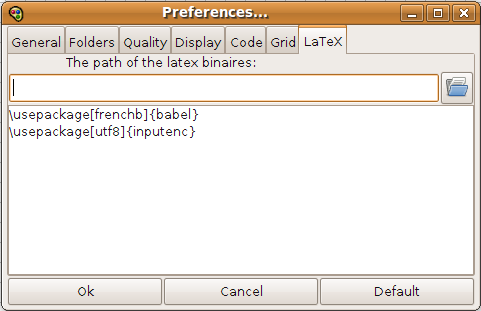
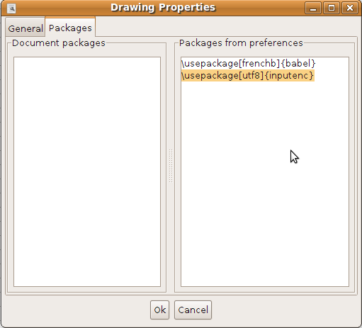

|
|
Exportation
LaTeXDraw can export your drawings in several formats using the menu "Export As ..." in the menu "File":
- SVG; it is the format by default since 2.0
- PSTricks; of course, it is the main goal of LaTeXDraw
- JPG and PNG; thanks to Java
- EPS; thanks to the jlibeps library
- BMP and PPM; thanks to the jiu library
- PDF and PS:
Since latexdraw 2.0.3 you can export your drawings in pdf and ps using your latex distribution: a latex document, containing your drawing, is created and compiled into a pdf or a ps document. You can then insert it into your main latex document as a picture (pstricks packages are no more needed and the pdflatex command can be used).
To carry out such a task, you may have to define the path where the binaries of your latex distribution are located (it is recommanded for Windows, but for linux the field can be let empty) in the preferences panel, as illustrated in the following screenshot:

You can also add some latex packages you regulary use into the text field shown on the above figure. These packages are not directly used to compile your drawing but are saved in order to be easily included into your document, as shown in the following screenshot:

In the drawing properties panel, you can copy/paste the packages saved in your preferences into the packages that will be used to compile the current drawing. You can also add extra packages.
|
|